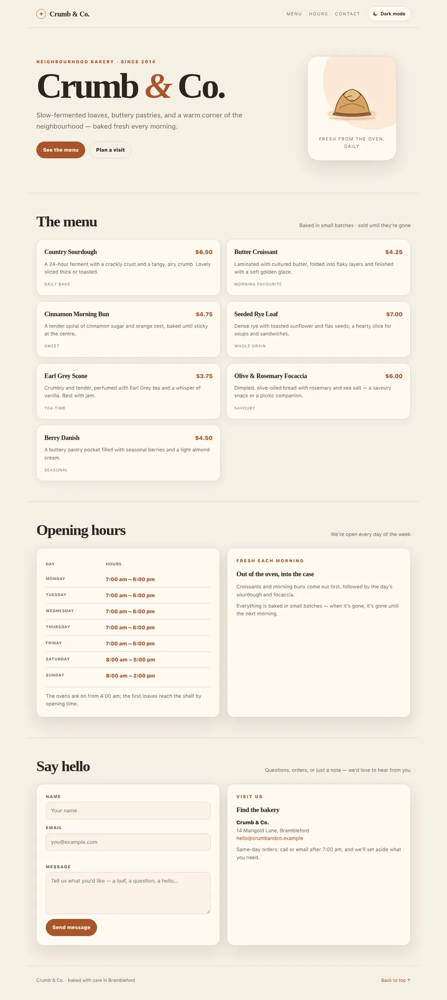
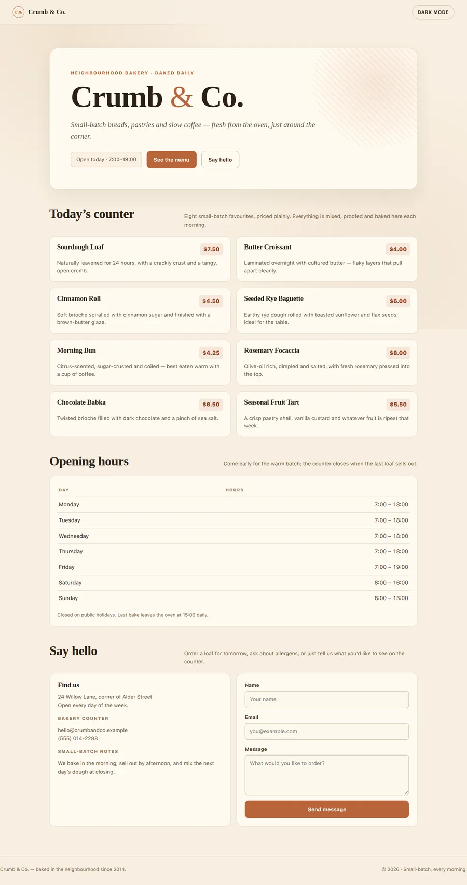

Editing one row of an LLM's output layer to stop it overthinking
A linear probe folded into the </think> row lets the model's own hidden state decide when its thinking is done. Tested on Qwen3.5-4B and on DeepSeek V4.1 Flash (763B, running on a laptop).
- I changed one row of the output layer: the row that produces the
</think>token. Its logit now also reads a linear probe that fires when the hidden state looks like "the answer is settled, I'm only re-checking". No training, no gradients, no engine or harness change, zero runtime cost. Because only one logit changes, the edited model's behaviour can be computed exactly offline. - Qwen3.5-4B (stock llama.cpp): on held-out MATH-500 problems, same accuracy with 54% fewer tokens (60% less thinking). At a 32k budget it solved 2 of 3 AIME 2025 problems on which the unedited model ran out of budget while re-checking an answer it already had. The live model matches the offline prediction to within 0.01 in probability. GGUF on Hugging Face.
- DeepSeek V4.1 Flash (763B MoE, 2-bit, streamed from SSD on an 8 GB laptop GPU): maths 7/7 vs 6/7 at max effort with 40% fewer tokens, including the hardest problem, which max and low effort both left unanswered. On an agentic website task: 84% less thinking and the highest blind rating of four settings (9.5/10 vs 8.2).
- It is not "low effort": it skips thinking after routine tool results (P ≈ 0.95) and still thinks after errors or new information (P(skip) ≤ 0.004).
| Model | Benchmark | Original | With the one-row edit | Change |
|---|---|---|---|---|
| Qwen3.5-4B stock llama.cpp | MATH-500, 8 held-out problems | 8/8 · 34,955 tokens | 8/8 · 16,080 tokens | −54% tokens |
| AIME 2025, 3 problems (32k budget) | 0/3 (out of budget) | 2/3 | +2 solved | |
| DeepSeek V4.1 Flash 763B, 2-bit, on a laptop | Maths, 7 problems, max effort | 6/7 · 41,559 tokensa | 7/7 · 25,112 tokensa | +1 solved, −40% tokens |
| Agent: build a website (blind rating /10) | 8.2 · 13,106 thinking | 9.5 · 2,062 thinking | −84% thinking | |
| Agent: puzzle + bug fix (2 tasks) | both right · 3,099 thinking | both right · 220 thinking | −93% thinking | |
| Agent: data analysis, never seenb | 4/6 findings · 10,160 thinking | 4.5/6 findings · 4,693 thinking | −54% thinking | |
| Still thinks after errors / new info | P(skip) 0.000 | P(skip) ≤ 0.004 | still thinks |
On this page
</think> probabilities along this trace. The answer, x = 2, first appears at token 567; the original kept re-checking until token 7,415. With the edit, the per-token stop probability stays below 0.0003 while the model is still solving, then fires at the ends of re-checking paragraphs ("Thus, the solution x=2 is unique."). It stops by token 2,000 with probability 0.98. No other token's probability changes.The idea
A reasoning model ends its thinking by emitting one token, </think>. Like every token, its logit is a dot product of that token's row of the output layer (the "head") with the final normalized hidden state h. So adding a vector to that single row adds a linear readout of h to one decision, the decision to stop:
g is a linear probe that separates two kinds of positions in the model's own thinking: paragraph ends after the right answer has already appeared (the model is only re-checking), and everything else (still solving, or mid-sentence). β sets how hard the edit pushes. The row is re-quantized into the file's own format and shipped as an ordinary weights file. The engine, chat template and agent harness are untouched, and the model costs exactly as much to run as before.
Two properties make this unusually easy to reason about:
1. The edited stop probability is exact. Only ℓclose changes, so with o the base model's log-odds of </think> at a position,
Given recorded hidden states, the edited model's stop probability at every position of every trace is a closed-form function of β. No generation is needed to tune it.
2. Every other token's distribution is unchanged, conditional on not stopping. For any j ≠ close, P′(j | not close) = P(j | not close). So a trace sampled from the original model is also a valid sample from the edited model up to the point where the edit stops it, and the probability of that stop is exactly 1 − Πt(1 − p′t). That is what Figure 1 plots, and it is how I searched for harmful early stops (below).
Experiment 1: Qwen3.5-4B
- Model: Qwen3.5-4B (hybrid Gated-DeltaNet/attention, vocab 248,320, hidden size 2,560), Q8_0 GGUF, fully on an RTX 4060 Laptop (8 GB).
- Engine: upstream llama.cpp, unmodified. Thinking mode on via the model's own chat template; temperature 0.6, top-p 0.95, top-k 20; fixed seed per problem.
- Fit data: the model's own thinking on 24 MATH-500 problems (levels 3–5), 12k-token cap. 22 traces usable (the right answer appears in the thinking), containing 146k tokens of re-checking after the answer first appears: about 6,600 per problem.
- Held out: every problem in the results below; none was used to fit or choose β.
- Edit: β = 14 (the same value as on DeepSeek). Qwen3.5-4B ties its head to the input embedding, so the edited GGUF adds a separate
output.weight: the embedding matrix with one row changed, Q8_0. llama.cpp loads an untied head automatically. - Cost: ~30 min to generate the fit traces, 2 min to capture hidden states, ~7 min for the fit and the β simulation (mostly the log-sum-exp over 248k logits per position). No GPU training.
Choosing β on held-out traces
I split the 22 traces in two halves, fitted on one half and simulated exactly on the other, then swapped. "P(stop before answer)" is the probability that the edited model would end its thinking before the right answer first appears, which almost certainly means a wrong or missing answer. "Re-checking kept" is the expected share of post-answer thinking that survives.
| β | P(stop before answer): mean | worst trace | Re-checking kept |
|---|---|---|---|
| 0 (original) | 0.000 | 0.000 | 97–99% |
| 8 | 0.000 | 0.000–0.002 | 90–95% |
| 10 | 0.000–0.001 | 0.002–0.008 | 81–92% |
| 12 | 0.002–0.005 | 0.012–0.037 | 66–85% |
| 14 | 0.008–0.020 | 0.069–0.170 | 52–73% |
| 16 | 0.036–0.074 | 0.311–0.589 | 36–64% |
| 20 | 0.164–0.237 | 0.956–1.000 | 23–50% |
Ranges are the two held-out halves (11 traces each). "Re-checking kept" is measured over the long tails of these 12k-capped traces; on full runs the saving is larger, because the model closes early instead of re-checking until a budget runs out.
The trade-off is smooth up to β ≈ 14 and then turns sharply: at 16–20 the edit starts stopping before the answer. 14 is the last safe-looking point, and it happens to be the value I'd already used on DeepSeek, so I kept it rather than tune it per model.
Does the live model do what the maths says?
I wrote the edited GGUF, loaded it in llama-server, and compared live next-token probabilities with the offline prediction at positions chosen from recorded traces:
| Position | Original P(</think>) | Edited, predicted offline | Edited, live |
|---|---|---|---|
| re-checking, algebra problem | 9 × 10⁻⁹ | 0.605 | 0.597 |
| re-checking, prealgebra problem | 2 × 10⁻⁸ | 0.942 | 0.944 |
| re-checking, geometry problem | 1.7 × 10⁻⁶ | 0.993 | 0.993 |
| 6 solving positions | not in top 30 | ≈ 0 | not in top 30 |
At all nine positions the other tokens kept exactly their relative probabilities (the spread of their log-probability shifts was 0.0000). The Q8_0 re-quantization of the edited row had a relative error of 1.2% on the added vector.
Results
</think> in any edited answer.| Set (one sample each, 32k budget) | Thinking on | Edited | Thinking off |
|---|---|---|---|
| MATH-500, 8 held-out problems | 8/8 · 34,955 tok | 8/8 · 16,080 tok | – |
| AIME 2025 I-7, I-9, II-8 | 0/3 (all hit 32k) | 2/3 | 1/3 |
On the three AIME problems, the original had already written the right answer inside its thinking every time, and ran out of budget while re-checking it. The edited model's one miss was the model still working: it was moving between candidate counts, and the edit correctly stayed silent. Qwen recommends up to 81,920 tokens for competition maths, where the original would likely finish, so the fair reading is that at a fixed budget, the edit turns more of the budget into answers.
Searching for harmful early stops
The failure that matters is an early stop on a wrong answer that the original would have corrected by re-checking. Property 2 makes this searchable without sampling: on an original trace, the probability that the edited model stops at position t is p′t Πs<t(1 − p′s). For every window with real stop mass, I forced </think> there, let the edited model write its answer (greedy) and graded it.
On the 6 held-out traces checked so far, 5 give the right answer at every possible stop. In the sixth, the stops at two paragraph ends (21% of the stop mass) produced no \boxed{} answer within 1,500 tokens. The thinking there had just concluded "the solution x = 2 is unique", so this is probably formatting rather than a wrong answer, but it isn't confirmed. I haven't yet found a case where the edited model is wrong and the original right.
Try it
hf download vaibhavrpi/Qwen3.5-4B-think-graft-GGUF Qwen3.5-4B-Q8_0-think-graft.gguf --local-dir .
llama-server -m Qwen3.5-4B-Q8_0-think-graft.gguf -ngl 99 -fa on -c 32768 --jinja
# use thinking mode as usual; only the timing of </think> changes5.2 GB (Q8_0). Fits an 8 GB GPU with a 32k context. Stock llama.cpp, no patches.
Experiment 2: DeepSeek V4.1 Flash (763B) on a laptop
- Model: DeepSeek V4.1 Flash, 763B-parameter mixture of experts, IQ2_XXS (2-bit, 243 GB).
- Hardware: HP Victus laptop: RTX 4060 Laptop (8 GB), Ryzen 7 8845HS, 30 GB RAM, one NVMe SSD. Experts are streamed from the SSD through a modified build of Strata, at about 12 tokens a second, so every thousand tokens of unnecessary re-checking costs well over a minute.
- Sampling: temperature 1.0, top-p 1.0 (the model card's setting); fixed seed per problem; reasoning effort via the chat template (max = 100, low = 50).
- Fit data: the head inputs over the model's own thinking on two maths problems (digit_sum and coin; 19.5k positions), captured on the one-token decode path that runs the edit.
- Edit: β = 14 on the
</think>row (token 128822), re-quantized to the head's Q5_K format with ggml's own quantizer: ±0.04 nats on that logit; the head tensor differs from the original in 3,463 bytes. - Held out: seven more maths problems (budgets 32k for the three tough ones, 16k for the rest) and every agent task. The probe never saw an agent prompt.
Left alone at max effort, the model spends most of its thinking re-checking answers it already has. On the six problems every setting solved, 25,363 of its 39,946 thinking tokens came after the right answer had first appeared. On the hardest problem it reached the right answer at ~17,800 tokens and kept verifying until the 32k budget ran out, without ever writing an answer.
| Setting | Right | Tokens (6 shared) | Re-checking | Minutes | Hardest problem |
|---|---|---|---|---|---|
| Original, max effort | 6/7 | 41,559 | 25,363 | 64.1 | no answer |
| Original, low effort | 6/7 | 25,548 | 7,781 | 36.3 | no answer |
| Edited, max effort | 7/7 | 25,112 | 2,630 | 35.3 | right |
"Re-checking" = thinking tokens written after the right answer first appeared. Two further held-out problems (a number-theory count and an edit distance by hand) ran out of the 16k budget for both the original at max effort and the edited model, so the full count is 7/9 vs 6/9.
Two more measurements on this model. On the two fitting traces, teacher-forced, the edit moves P(</think>) at re-checking paragraph ends from 0.000 to 0.50 and 0.23, while on solving positions the per-token KL divergence from the original is 0.0003 with 99.6% top-1 agreement. On a general held-out text set (~1,000 positions), KL against the 6-expert reference was 0.1155 vs 0.1119 for the unedited model (top-1 82.9% vs 83.4%), inside this configuration's run-to-run noise.
Agent tasks
I ran the same edited DeepSeek through a terminal coding-agent harness ("dsh") at its default medium effort, which allows up to 2,048 thinking tokens per step. The main task: build a polished single-page website for a bakery, with a menu, opening hours, a validated contact form, a persistent dark mode and a responsive layout.
| Website task | Thinking tokens | Steps | Capped steps1 | Blind rating2 |
|---|---|---|---|---|
| Original, medium (default) | 13,106 | 10 | 4 | 8.2 |
| Original, low effort | 12,530 | 36 | 5 | 9.1 |
| Original, thinking off | 0 | 9 | 0 | 8.5 |
| Edited, medium | 2,062 | 6 | 1 | 9.5 |
Six menu items, hours side card, plain form.

Polished, but took 36 steps and scrolls sideways on a phone.
Plainest: six items, no navigation, no contact details.

Eight items with price badges, hero buttons, an hours table, a "find us" panel.
The edited model's page was rated highest, with 84% less thinking than the original at the same setting. It spent its 2,062 thinking tokens on one step, planning the page, and none while writing the file or checking its work. The original spent 63–70% of its thinking on a failure mode I hadn't seen described before, which I'll call cap-thrash:
ls, and drafts the whole file again from scratch in the next step, 4–5 times per run. Its earlier thinking was in its context; it restarted anyway.Does it still think when something surprising happens?
Skipping thinking on easy steps only helps if the model still thinks when it matters. By property 1, the probability that the edited model skips thinking entirely on a step is exactly P′(</think>) at the first thinking position, computable from the original's recorded prompts:
| What the last tool result was | Original: P(skip thinking) | Edited: P(skip thinking) |
|---|---|---|
| Routine: "Ran 7 tests … OK" | 0.11 | 0.94 |
| Routine: file updated | 0.12 | 0.95 |
| Routine: answer confirmed | 0.01 | 0.95 |
| Task start | 0.01–0.29 | 0.32–1.00 |
| New information: the test file's contents | 0.000 | 0.002 |
| New information: empty directory (time to plan) | 0.000 | 0.004 |
Error: node ENOENT | 0.000 | 0.001 |
| Error: browser failed to launch | 0.000 | 0.000 |
Tests fail (..EFEF.) | 0.27 | 0.91 |
25 recorded prompts from the original's own runs (representative rows; all 25 in the repo). For the failing tests the next sensible action is "read the code", which needs no thought; after reading it, the edited model thought for 220 tokens and fixed the bug.
The same thing happened live on a task it had never seen: adding promo-code support to a small codebase, checked by hidden tests. After Ran 25 tests … FAILED (failures=6), the edited model thought for 128 tokens and found the cause ("The tests pass code as parse_order only, not parse_code!"), spent 76 tokens on the fix, and passed all 9 hidden tests.
Two more small tasks
| Task | Original thinking | Edited thinking | Result |
|---|---|---|---|
| eyes: probability puzzle (may write code) | 2,828 | 0 | both right |
| orders: fix 3 bugs so hidden tests pass | 271 | 220 | both pass |
A data-analysis task it had never seen
A bakery chain's sales CSV with three planted effects and three planted data problems; the model writes a report with findings and a chart. (The original at medium wasn't run on this task; low effort was.)
| Analysis task | Original, low effort | Edited, medium |
|---|---|---|
| Thinking tokens | 10,160 | 4,693 |
| Weekend effect (+59%) | found | found |
| Data problems (duplicates, negative quantities, missing prices) | 3/3 | 3/3 |
| Steadily declining product | missed | missed |
| A store's step up in March | missed | partly |
| False claims | 1 | 2 |
"Isn't this just low effort?"
This was my own first question, and the answer depends on the task.
On maths, the token count is about the same, but different tokens get cut. The edited model used 25,112 tokens on the six shared problems; low effort used 25,548. Low effort cuts the re-checking too (7,781 tokens left) but also solves less carefully: on the code-tracing problem its first pass got 93, a shallow check said "Correct", and only a full re-derivation found 85. The edited model keeps max-effort solving (15,366 solve tokens vs 14,583 at max and 16,469 at low) and drops the re-checking (2,630 left). It was the only setting that answered the hardest problem.
On agent tasks, low effort backfires. It halves the per-step budget, so the model hits the cap more often and cap-thrash gets worse: 36 steps instead of 10, and 885k tokens of context re-read versus ~64k for the edited model.
Thinking off can't react. It never thinks, so it can't stop to think when a test fails or a tool errors, and its page was rated below the edited model's (8.5 vs 9.5).
The edited model decides per step, from its own state: it skips thinking after routine results and thinks after surprises. Effort levels, budgets and "thinking off" apply one setting to every step.
Method in detail
1. Capture the head's exact input
Let the unedited model re-read its own traces and save the final normalized hidden state at every position: the exact vector the head multiplies. On Qwen this is a small libllama tool (embeddings on, pooling none, causal chunks of 1,024 tokens with the KV cache kept between chunks). Checks: the captured states reproduce the model's own sampling log-probability (−0.18 nats per token at T = 0.6), and the generated token is the argmax at 93.7% of positions. Capture on the path that will run the edit: on DeepSeek, chunked prefill and one-token decode differ by 1–3 nats on this logit (details under ablations).
2. Label
For each trace, find the first position where the right answer is stated in the thinking. For short numeric answers, require it to be stated as a result ("= 5", "is 5", "answer … 5") rather than appear as an intermediate value. Positives: positions right after a paragraph break (\n\n) after that point. Negatives: every other thinking position, which covers the entire solving phase plus mid-paragraph positions while re-checking. On Qwen this gave 595 positives against ~64k (subsampled) negatives.
3. Fit a closed-form probe
Shrinkage linear discriminant analysis, no gradients:
# H: (n, d) head inputs; P / N: boolean masks for positives / negatives
mu_p, mu_n = H[P].mean(0), H[N].mean(0)
S = np.cov(H[N].T, bias=True)
S = 0.8*S + 0.2*np.trace(S)/d*np.eye(d) # shrinkage 0.2
w = np.linalg.solve(S, mu_p - mu_n)
a, b = np.median(H[N] @ w), np.median(H[P] @ w)
g = w / (b - a) # medians: negatives → 0, positives → 1Scaling g so the two medians sit one unit apart makes β interpretable: at a typical re-checking paragraph end the edit adds about β nats to the close logit; at a typical solving position it adds about zero. The negatives are what make this safe. Every solving position and every mid-sentence position is a negative, so the discriminant direction is the one that is specifically high at "settled" paragraph ends.
4. Simulate β exactly
o = l_close - logsumexp(l_others) # base log-odds per position
p = sigmoid(o + beta * H @ g) # edited stop probability (exact)
stopped_by_t = 1 - np.cumprod(1 - p)
# report: P(stop before answer), re-checking kept, stray </think>5. Write the row back
Add β·g to the </think> row (in float), re-quantize that one row with ggml's quantizer, and write a new GGUF with every other tensor byte-identical. For a tied-embedding model, add output.weight as a copy of the embedding with the edited row, so the input embedding of </think> is untouched. Check the effective edit after re-quantization: 1.2% relative error on Qwen (Q8_0); ±0.04 nats on DeepSeek (Q5_K).
Ablations and dead ends
The model's own stop probability gives no warning. On DeepSeek, P(</think>) stayed ≈ 0 through 4,700 tokens of re-checking on digit_sum, was 0.02 just 37 tokens before the model finally closed, and 0.51 at the close. Early-exit rules that threshold the model's own confidence in ending (DEER-style) have nothing to work with here. The information is in the hidden state, just not on the close logit's axis.
Mid-layer edits don't move the decision. Re-checking vs solving is linearly separable in the residual stream (cross-problem AUC 0.91–0.99 for the mean-difference direction), but every intervention there left the stop probability at re-checking paragraph ends ≈ 0 (max 0.02):
| Intervention (DeepSeek) | KL vs original (solving) | P(</think>) at re-checking ends |
|---|---|---|
| Delete 16 shared-expert neurons per layer, layers 24–39 (two selection rules) | ≈ 0.007 | ≈ 0 (once 0.15) |
| Mask the top-2 "re-checking" routed experts per layer, layers 20–39 | ≈ 0.001 | ≈ 0 |
| Add or subtract 0.25 × the re-check − solve mean difference at layer 24 | ≈ 0.01 | ≈ 0 |
| Project that direction out (shared-expert output, layers 24–39; residual streams) | 0.004–0.006 | ≈ 0 |
| One-row head edit (this post) | 0.0003 | 0.23–0.50 |
Top-1 agreement with the original stayed at 96–99% for every mid-layer edit (99.6% for the head edit). The original model's own value at those positions is 0.000 (max 0.02).
While re-checking, the close logit sits 10–15 nats below closing. Nudging a mid-layer state by an amount that keeps KL small doesn't come close to moving it. The head is where the decision is made, so that's where the edit has leverage.
Mean-difference probe vs discriminant. Putting the plain mean difference (re-check − solve) on the row saves as many tokens on paper, but it fires during solving and mid-sentence: P(stop before the answer) 5–100% at β ≥ 8. The shrinkage discriminant, with all solving and mid-paragraph positions as negatives, keeps it ≤ 0.001 at the same β on the fitting traces.
Calibrate on the path that runs the edit. The first DeepSeek probe was fitted on hidden states from chunked prompt processing. Teacher-forced through one-token decode, its stop probability at the same paragraph ends dropped from 0.51 / 0.23 / 0.93 to 0.13 / 0.08 / 0.32, and the first real run didn't stop early at all. Refitting on decode-path states (median alignment with the engine's own scores: 0.008 nats) fixed it. On Qwen, captures with 1,024- and 256-token chunks differ by a median 2% per row (kernel numerics, not chunk boundaries), small enough not to matter for a linear probe.
How it started
I'd been running DeepSeek V4.1 Flash on my laptop for a while, streaming it off the SSD through a heavily modified engine, and I wanted it faster and less wasteful. I'm GPU-poor, so the constraint was training-free methods only. The weight-space programming posts had me curious whether you could just edit a model into reasoning more efficiently.
First I asked GPT-6 Astra (through Codex) to do exactly that: edit DeepSeek's weights so it reasons compactly instead of in long prose. It edited 5.4–16.8 million shared-expert weights over two days. Thinking length didn't move (695 tokens before, 699–729 after); stronger edits just caused repetition. Maybe that works better on small models; on this one the decision to stop is held in the head, as the table above shows.
Then latent reasoning: keep the reasoning inside the hidden state instead of writing it out. On a 2-bit model a single forward pass copies digits from the clues but never applies the logic. No gain.
So I gave up and set thinking to low. Then I read a post claiming DeepSeek was trained at max effort, and that lower settings make it worse and even longer. My agent runs agreed: low effort took 36 steps where medium took 10. But reading the maths traces, I noticed the model usually had the right answer early, and most of the thinking was re-checking something it already knew.
That's what early-exit research is about, but most methods I found need training or a component running next to the model. I let Claude Code work through it overnight on my machine. The approach that worked is the one-row edit above.
Prior work
The core idea isn't mine. That a reasoning model's hidden state knows the answer is settled, and that a probe can end the thinking early, is published: Zhang et al. 2025 (probe-driven early exit), Sheng et al., NeurIPS 2025 (a direction that sets the </think> logit) and ROM (a trained overthinking detector). ThinkEdit edits weights for thinking that is too short. What's here is narrower: folding the probe into the </think> row, so that the edit is just a weights file with no runtime component, and measurements on a 763B model on a laptop, including agent tasks.
The other common route to a model that thinks less is training a "think less" variant. ThinkingCap-Qwen3.8-27B, a fine-tune of Qwen3.8-27B, reports 37% fewer reasoning tokens on average (85.8% vs 86.6% accuracy), and its GGUF alone has been downloaded almost 900k times, so people clearly want this. Thinkless uses reinforcement learning to teach a model to choose, per prompt, between a short answer and long reasoning (50–90% less long-chain thinking). BudgetThinker and similar models train token budgets in. All of these need training data and GPU time for every model you want to change. This edit is a training-free alternative: a few dozen of the model's own traces, closed-form linear algebra, and one changed row.
What surprised me is how little this is used. In 2026 I couldn't find it, or anything like it, in the popular inference engines and tools: they offer effort levels, token budgets and "thinking off", but nothing that lets the model's own state decide when to stop. It's a simple and effective way to cut thinking, and it doesn't seem to be widely known.
Limitations
- Small numbers. Every DeepSeek cell is one run, and run-to-run variance is large. The Qwen sets are small too. I'm GPU-poor, so this is still being benchmarked and validated on more problems, seeds and models.
- Stray
</think>tags. On DeepSeek, the edited model's visible maths answers sometimes contain extra close tags (56 on the hardest problem, 1–2 on four others): re-checking inside the answer looks like re-checking inside the thinking, so the probe fires there too. Harmless for grading, untidy for users. Adding the model's own answer text as negatives removes them (in the repo). None appeared on Qwen. - Some checking moves into the answer. When the model still has a checking plan, stopping the thinking can move part of it into the visible answer (DeepSeek, coin problem: 3,611 answer tokens). It still came out 36% shorter overall.
- Fitted on maths only. The DeepSeek probe saw two maths traces; everything agentic is transfer.
Reproduce
Everything is in github.com/nextgen-user/think-graft:
- Qwen3.5-4B, end to end on one 8 GB GPU with upstream llama.cpp: trace generation, head-input capture, the fit, the β simulation, writing the GGUF, live verification, and the benchmark and exit-risk scripts.
- DeepSeek V4.1: the fit scripts, the edited rows and probes, every run's logs and tables, the agent task prompts and answer keys, and all site screenshots. The engine capture hook is specific to my Strata build.